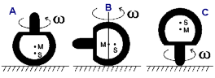

Ladung und Wendekreisel
Ladung
ist eine relative Größe und natürlich nur mit Strömungsgrößen erklärbar,
denn etwas Anderes als Äther gibt es nicht.
Negative
Ladung:
strömender, sich verdichtender Äther - bereits dichter als die Umgebung
Positive
Ladung:
strömender, sich verdünnender Äther - bereits dünner als die Umgebung
Ein
elektrisches Feld von Plus nach Minus wird im Leiter einen Strom (=direkter
Ätherfluss, etwa von UrAtomen) erzeugen, der die Ladung aufhebt = Vermischung/Mittelung
der beiden Gradienten zu Null.
Ein
elektrisches Feld von Plus nach Minus wird im Dielektrikum (Kondensator)
magnetische Wirbel/Dipole erzeugen, die die besagten Gradienten voneinander
abschirmen/trennen. Vermittelnd sind natürlich Ätherflüsse, die am Anfang
den Kondensator etwas entladen. Aber dann bilden sich elektrische Mini-Dipole
in umgekehrter Richtung und nehmen eine Menge Energie auf, um sich auszurichten
(=E-Feld).
Für Äther der feineren Hierarchie ist das natürlich ein Grund zum Strömen,
wie auch beim Feld des Dauermagneten. Diese feineren Flüsse schaffen
aber keine merkliche Entladung mehr, weil sie den Mini-Dipolen (im Dielektrikum)
folgen und damit die falsche Richtung haben.
Eine
Rotation erzeugt sich 'Gegenwind', und jetzt kommt es drauf an, wo die
Gegenwindströmung dichter wird (-) und wo dünner (+). Da wir als Planet
rotieren, gibt es auch hier einen (nichtlinearen) Ätherdichte-Gradienten
in senkrechter Richtung (gemeint ist der nicht-mitgeführte waagerechte
Strömungs-Anteil, also etwa 10 km/s). Die Ionosphäre gilt als positiv
geladen, dort oben scheint der Ätherwind wieder dünner zu werden. Kurz
über der Erdoberfläche muss der Gradient des Ätherwindes von Null auf
steigend gehen, also dichter als ohne Ätherwind (negativ) sein.
Ich frage
mich: In welcher Höhe liegt das Maximum des Ätherwindes ? Dort liegt
auch das Maximum der negativen Ladung. Das kann nicht direkt am Boden
sein !

Um
den rotierenden Kreiselhut herum wird es dichter, also negativ geladen.
Das addiert sich zur vorhandenen (planetaren) negativen Ladung.
Drei Zentimeter höher ist die planetare Ätherdichte höher als ganz unten.
Am Stiel (noch oben) hat sich so gut wie nichts getan. Wir haben unter
dem Stiel und über dem Stiel mehr negative Ladung. Im Stielbereich ist
ein Loch, ein Hohlraum, ein Sog. Wenn der Stiel zur Seite zeigt, wir
der Hohlraum im Kreis geschwenkt. Die beiden starken Strömungen berühren
sich dann bereits und ziehen sich schließlich an (Pinch-Effekt bei gleicher
Drehrichtung, ansonsten Casimir-Effekt). Der Kreiselhut wird hochgesaugt,
der Stiel steht unten und passt ladungsmäßig besser in die Umgebung,
die unten sowieso weniger negativ ist.
Es
muss eine Höhe geben, ab der der kritische Wendekreisel nicht mehr wendet.
Man sollte es auf Bergen und Türmen probieren. Und in Jahreszeiten,
wo der Ätherwind schwach ist, geht er vielleicht auch nicht mehr in
derselben Höhe.
Unter
kritischem Wendekreisel verstehe ich einen, der so weit gefüllt ist,
dass er gerade noch kann. Der vom Patent
dürfte als kritisch oder überkritisch gelten, wenn sich global in der
Zwischenzeit die Ätherdichte geändert hat.
Der
Wendekreisel kann als Sensor/Detektor für die Ätherwind-Erforschung
eingesetzt werden ! Es ist so einfach, dass keiner drauf kommt.
Zurück
zu Zusammenfassung